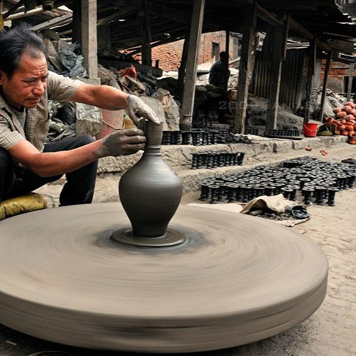

PHOTOS


The third of the medieval city-states in the Kathmandu Valley,
Bhaktapur was always described as the best preserved.
Tragically, however, the 2015 earthquake caused terrible devastation and loss of life.
Nevertheless, only a few temples were destroyed, there is still much to see here and tourism is vital to the community.
Biska Jatra is one of Bhaktapur’s most popular festivals. The aesthete considers it to be one of the city’s most valued festivals, with both cultural and historical significance.
People welcome Basanta, or spring, through this Jatra, which is held in mid-April. Biska Jatra is the largest jatra celebrated in Bhaktapur. It is celebrated for eight nights and nine days, thus, is also known as the Chyacha Gunhuya Jatra, which translates to “eight-night and nine-day jatra.”
This jatra is also known as Bisket Jatra and Vishwodhoj jatra.
Family members of departed people participate in a procession called Sa Paru also called ‘Gai Jatra’ or ‘Cow Festival’ in Bhaktapur, Nepal on August 31, 2023. The festival is celebrated by people of Newar communities in memory of deceased family members who died the preceding year
Indra Jatra is a revered festival with processions of living gods and goddesses, the dance of the demon, Lakhe, and several other masked performers who converge on the main Durbar Square. But none of them is as fascinating as the procession of Pulu Kisi, the blue elephant in search of his master, Indra, king of heaven and the god of rain.
Yomari Punhi is an auspicious day for the Newari community. On this day Kathmandu Valley residents worship Annapurna, the goddess of crops and food, and pray for a good rice harvest.
Yomari is unquestionably one of the most popular Newari food items. It is a steamed fish-shaped dumpling covered in new-harvest rice flour and filled with chaku (molasses) or khuwa (condensed milk) and sesame seeds. Yomari is wholesome, delicious and nutritious dessert for snacks.